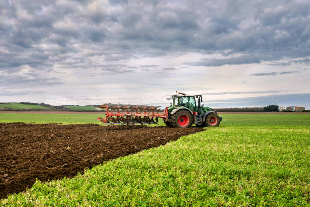

1. Ventas en Mercados Campesinos
Acompañamiento y asesoría para la comercialización de productos campesinos en ferias locales y regionales.
Bienvenidos a AgroRaíz, una iniciativa dedicada al fortalecimiento del campo colombiano. Nuestro propósito es brindar herramientas prácticas a pequeños productores rurales a través de la capacitación en procesos de industrialización, la promoción de la economía campesina y asociativa, y el acompañamiento para la participación activa en mercados locales.
Creemos en el poder transformador del trabajo colectivo y en el valor de las comunidades rurales como motor de desarrollo sostenible.
| Nombre | Carrera | Hobby | Ficha |
|---|---|---|---|
| Aquiles Yesid Carpintero Blanco | INFORMÁTICA Y CONVERGENCIA TECNOLÓGICA | Lectura y agricultura | 51154 |
Acompañamiento y asesoría para la comercialización de productos campesinos en ferias locales y regionales.
Formación práctica sobre transformación de productos agrícolas, conservación y empaques.
Fortalecimiento de organizaciones rurales mediante economía solidaria y trabajo cooperativo.